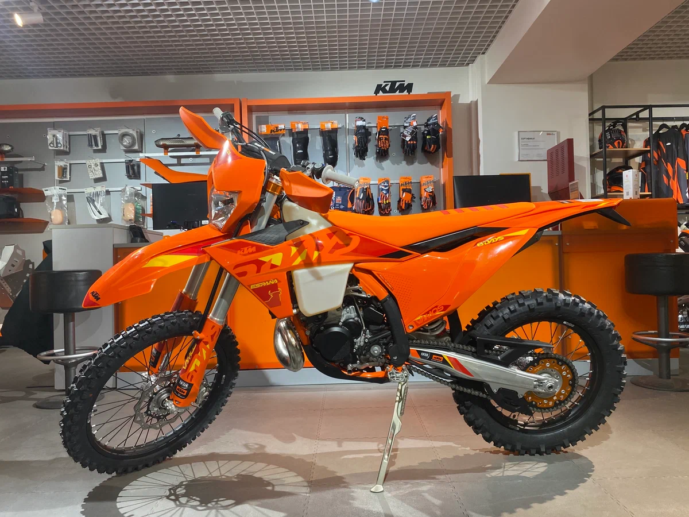

|
ENDURO WORLD
Всё о мотоциклах для бездорожья |
| Главная | История | Мотоциклы | Экипировка | Гонки | |
|
|
| ТЕХНИКА |
| Модель | Объём (см³) | Вес (кг) | Тип | Цена (от $) |
|---|---|---|---|---|
| KTM 300 EXC | 293 (2Т) | 104 | Хард-эндуро | 11 500 |
| Husqvarna TE 300 | 293 (2Т) | 106 | Техничное | 11 800 |
| Honda CRF450L | 449 (4Т) | 131 | Двойного назначения | 10 500 |
| Beta RR 430 | 430 (4Т) | 118 | Тяжёлое эндуро | 10 200 |
| Sherco 300 SE | 293 (2Т) | 105 | Экстремальное | 11 200 |
2Т — двухтактный двигатель (легче, резвее), 4Т — четырёхтактный (тяговитее, надёжнее на низах)

Этот мотоцикл уже много лет считается эталоном в хард-эндуро. Инжекторный двухтактный двигатель TPI не боится перепадов высот и обеспечивает идеальную тягу на камнях. Многие профессиональные гонщики выбирают именно эту модель для самых сложных соревнований.